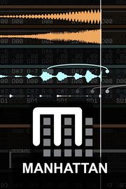

Manhattan
Manhattan
Detalles
|  | |
| Tiempo de juego | 1m 0s |
| Última actividad | 22/03/2023 18:43:21 |
| Añadido | 24/04/2023 17:08:11 |
| Modificado | 24/04/2023 17:09:31 |
| Estado de finalización | Jugado |
| Librería | Steam |
| Fuente | Steam |
| Plataforma | PC (Windows) |
| Fecha de lanzamiento | 27/12/2022 |
| Puntuación de la Comunidad | 73 |
| Puntuación de la Crítica | |
| Puntuación de usuario | |
| Género | Audio Production Early Access Education Game Development Software Training Utilities |
| Desarrollador | nash.audio |
| Editor | nash.audio |
| Característica | |
| Enlaces | Punto de encuentro Discusiones Guías Noticias Página de la tienda PCGamingWiki |
| Tag | |
Descripción
Manhattan is a hybrid music sequencer and programming language that couples traditional MIDI editing with powerful procedural generation capabilities. Designed for both newcomers and experts, Manhattan is new way of thinking about music - as patterns and processes - that makes composing and coding faster and easier, whether you want to write pop ballads, symphonies, or dive into the world of live coding, algorithm music, and procedural generation.

Offering extensive built-in interactive tutorials and examples, Manhattan is the perfect introduction to coding for musicians and non-coders, enabling you to explore key programming concepts as music - from basic principles like simple expressions, variables, loops, if-then-else, to fundamental coding techniques like iteration, functions, pointers, and user input, as well as advanced and emerging concepts like parallel threads, lambda functions, and code that can write itself!

This free version runs as a standalone app or as a VST/AU plugin and includes everything you need to start writing music with (or without) code:

Manhattan is the work of developer and researcher, Dr Chris Nash, under the banner of nash.audio, a UK-registered not-for-profit organisation devoted to the advancement of learning and creativity in digital music, supported by the students on UWE Bristol's music technology degree programmes, where the program is used to teaching computational thinking. Manhattan has also powered several public artworks, such as BBC Music Day 2018 and BBC Digital Cities 2020, pioneering new forms of musical expression, such as crowd-driven music (using Manhattan and machine vision to live compose music for a public space). Contact the project if you are interested in using Manhattan in your art, software, or teaching.
Offering extensive built-in interactive tutorials and examples, Manhattan is the perfect introduction to coding for musicians and non-coders, enabling you to explore key programming concepts as music - from basic principles like simple expressions, variables, loops, if-then-else, to fundamental coding techniques like iteration, functions, pointers, and user input, as well as advanced and emerging concepts like parallel threads, lambda functions, and code that can write itself!
This free version runs as a standalone app or as a VST/AU plugin and includes everything you need to start writing music with (or without) code:
- Advanced MIDI-compatible, pattern-based sequencer, supporting tracker and score notation views, with mixing and effects processing.
- A built-in instrument library of over 100 multi-sampled presets, plus analogue and physical modelling synths and external MIDI input/output.
- A powerful formula system to embed live code anywhere in your music - for manipulating or generating music on-the-fly.
- A complete series of interactive tutorials with video demonstrations, covering music and coding concepts, explored through familiar pieces of music by artists such as New Order, John Williams, Max Richter, and OutKast!
- An extensive collection of demos and examples, including numerous "études" - famous pieces of music from almost every era and genre reworked as code, from Pachelbel's Canon and Mozart to Jimi Hendrix and Fatboy Slim, plus generative examples from ambient jazz to Debussy.
Manhattan is the work of developer and researcher, Dr Chris Nash, under the banner of nash.audio, a UK-registered not-for-profit organisation devoted to the advancement of learning and creativity in digital music, supported by the students on UWE Bristol's music technology degree programmes, where the program is used to teaching computational thinking. Manhattan has also powered several public artworks, such as BBC Music Day 2018 and BBC Digital Cities 2020, pioneering new forms of musical expression, such as crowd-driven music (using Manhattan and machine vision to live compose music for a public space). Contact the project if you are interested in using Manhattan in your art, software, or teaching.